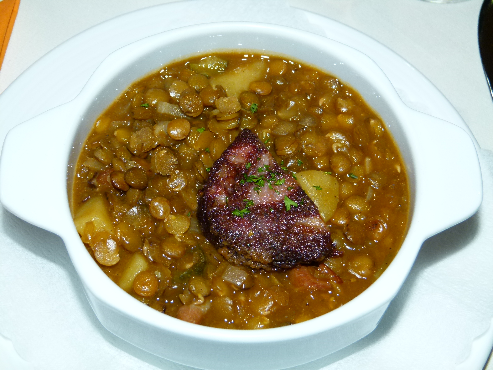

Lentil Soup

Chef's Notes
This is a hearty though meatless soup. The Swiss chard adds a sweetness.
The fennel adds a wonderful anise flavor.
Ingredients
- 1 cup of uncooked green lentils
- 5 cups vegetable stock
- 3 stalks of celery with some leaves, cut into 1" pieces
- 1 large sweet onion, cut up
- 1 small fennel bulb, thinly sliced
- 3 carrots, cut into 1" pieces
- Salt and pepper to taste
- 1 small head of swiss chard, cut into 1" pieces including stems
- 1 clove of garlic, whole
- 1 T olive oil
- 1/2 cup parmesan cheese
Directions
- The night before you make the soup, fill a small bowl with water.
- Add your lentils. Soak the lentils in the water overnight.
- The day you make the soup, rinse and drain the soaked lentils.
- Pour the vegetable stock in a large heavy pot over medium heat.
- Add the lentils, celery, onion, fennel, carrots, tomatoes, and salt and pepper.
Cook until the lentils and carrots are soft, about 20-30 minutes.
- In a separate pan over medium heat, add 1/2 cup of water, the swiss chard, the garlic clove, and olive oil.
Cover the pan. Steam until the swiss chard is soft, about 10 minutes.
- Uncover and remove the garlic clove. Add the swiss chard and its juices to the soup in the pot.
Stir to combine. Reduce the heat and simmer until ready to serve.
- To serve, ladle into individual bowls and top with parmesan cheese.
Back to top